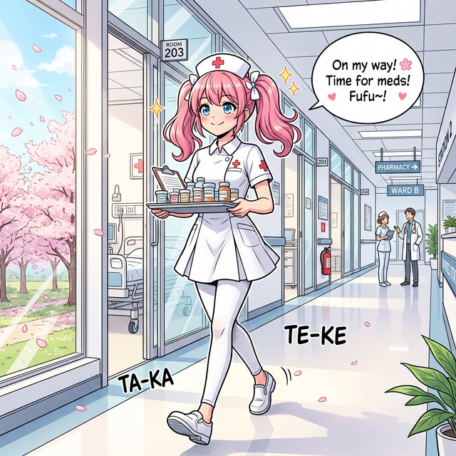
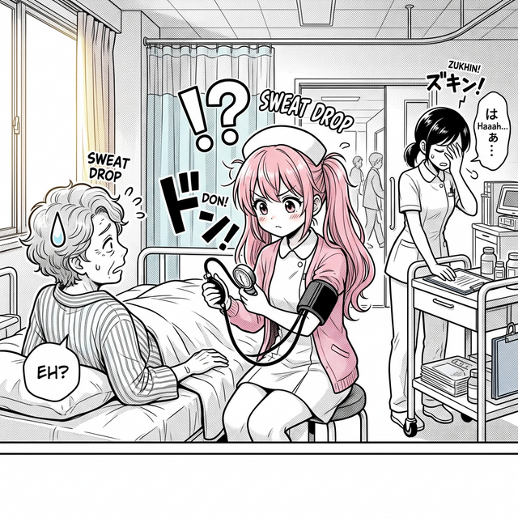
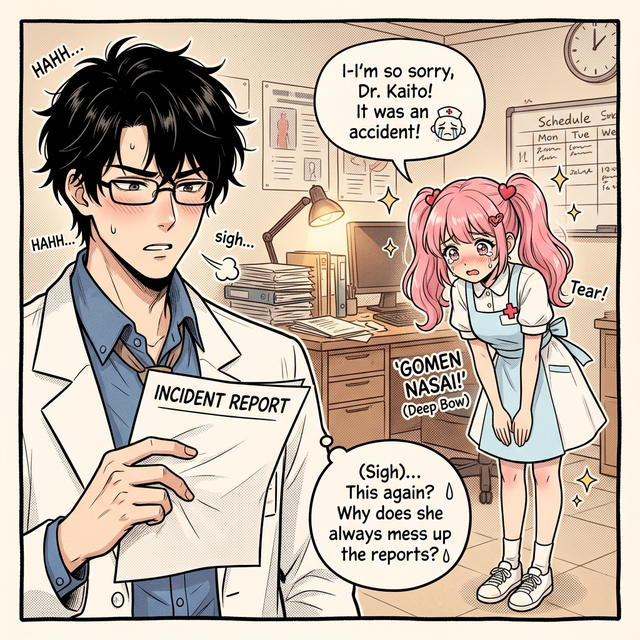

🏥 ドジっ子ナースの
インシデント報告書
報告者：さくら🌸（新人ナース・3ヶ月目）
1

今日こそ
ミスしません！💪✨
新人ナース・さくら（22歳）
🌸
2
ガシャーン！
ひゃあぁっ！！💦
モップー！！
さっき言った
そばから…
3

血圧測りますね〜♪
…あれ？
お嬢ちゃん…
それ自分の
腕だよ…😅
※自分の血圧を測ってしまう
4

さくらさん…
今月3回目
ですよ…？😩
ごめんなさい〜！😭
もう絶対
しません〜！
泣き顔も
可愛いな…🫠
📋 インシデント報告書 No.2026-031
| 報告日 |
2026年3月7日 |
| 報告者 |
看護師 さくら（3年目研修中） |
| 発生場所 |
3階東病棟 302号室 |
| 事故の種類 |
① 薬剤トレイ転倒 ② 測定対象誤認 |
| 患者への影響 |
なし（本人が一番ダメージ） |
| 再発防止策 |
「走らない」「自分の腕と患者の腕を区別する」 |
| 師長コメント |
…頑張ってください（3回目） |
要改善